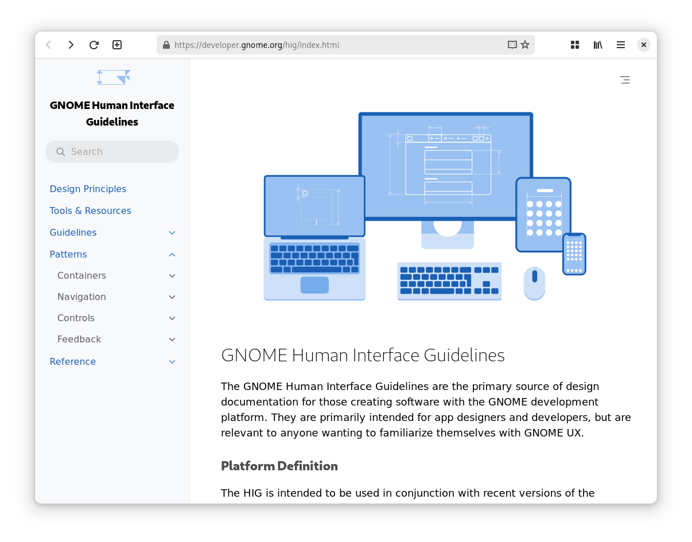

name: centered class: middle, center, gnome layout: true --- name: top class: top, gnome, center layout: true background-size: cover --- name: slide layout: true class: left, gnome, bottom background-size: cover --- background-image: url(img/tris.svg) background-size: 50% background-position: top right # State of the Union ### GNOME Design Team ??? --- exclude: true This slide won't be included in the presentation ??? These are presenter notes you can have multiple --- .imagegroup[ .avatar[] .avatar[] .avatar[] .avatar[] .avatar[] ] # _(Some of the)_ GNOME Design Team ??? ## Cassidy Some of the design team: - Allan Day - Jakub Steiner - Tobias Bernard - Sam Hewitt - Cassidy James Blaede **And friends!** Lots of folks in Matrix and across the GNOME GitLab like Alice and Christopher, and folks downstream contributing by working on Ubuntu, Endless OS, and more **Weekly calls:** small weekly sync on initiatives and ongoing work, presenting ideas or asking for input --- # Dive in: 1. **Overview of GNOME UX** 3. **Visual Design** 5. **Platform** 4. **Settings** 6. **Core Apps** 6. **OS/Shell** ??? Going to dive into 6 areas today: - Overview - OS/Shell - Visual Design - Settings - Platform - Core Apps For those of you good at math, you'll notice that's 30 minutes' worth of topics—we'll see how we do! --- .scaledimage[] # an Overview of GNOME UX ??? ## Allan This presentation is intended as a high level overview of GNOME user experience. That includes both the user experience we currently provide to our users, and the design activities that are happening and feeding into that. In a moment we'll get into the specifics of each UX area and what's happening. But before we do that, I want to make some general remarks about where we are at today. * GNOME 3.0 was released in April 2011 - roughly 13 years ago * There was a long period after this initial release where we worked really hard to refine and mature that experience. It was also during this period that we started to reimagine our apps and our app design patterns. * Towards the end of that first GNOME 3 period, major innovation in the UX space slowed. If you look at the 2018 and 2019 GNOME releases, they don't contain much in the way of big UX changes. But then things changed * About 3 years ago, we embarked on a new project, whose goal is to revamp and reimagine every aspect of the GNOME user experience. * We are going through every component and updating and refreshing it. Every part of the shell. Every core application. Every aspect of the platform. * What we are going to present to you now is an overview of that process - what has been done, what is happening, and what is still left to do. It's an exciting project. It's a project where the sum is greater than its individual parts - as each element is completed, the whole grows in terms of its coherence and efficacy. We are asking you as the GNOME project to help us to drive this project through to completion. --- .scaledimage[] # Visual Design ??? ## Jakub --- template: top background-image: url(img/app-icons.svg) # App Icons ??? ## 3rd party Apps / Circle * `#appicondesign:gnome.org` on matrix * **Brage Fuglseth** @bragefuglseth:matrix.org * adwaita-icon-theme no more scripts. App Icon Preview, meson by **Dan Yeaw** * Tooling -- Bilal, gtk4 ports, **Symbolic Preview** improvements --- template: centered background-image: url(img/symbolics.svg) ??? ## Symbolics * Shoutout to **Sam Hewitt** * Rounded outlines * Symbolic Preview Improvements by **Bilal Elmoussaoui** --- background-image: url(img/wallpapers/light-dark.jpg) # .invertedtext[Wallpapers] ??? * GNOME Brand. Consistent default since **3.12** * Light / Dark (42) * Square format * WebP / JPEG-XL -- thank Jordan Petridis (& Abderrahim Kitouni, Michael Catanzaro) --- template: centered <video id="websites" class="fullscreen" loop autoplay muted> <source src="img/release-notes.webm" type="video/webm" /> </video> ??? ## Websites * **circle.gnome.org**, **cantarell.gnome.org**, **brand.gnome.org**, **hig**, **forty.gnome.org** --- template: top background-image: url(img/apps-gnome-org.svg) # apps.gnome.org ??? * **apps.gnome.org** Sophie * TWIG - 100+ posts, Thanks to Felix, Chris & team. --- .scaledimage[] # Platform --- template: centered # New HIG #### GNOME 41, September 2021  --- background-image: url(img/platform/adw11.svg) # Libadwaita 1.1 #### GNOME 42, March 2022 New visual style, dark mode, Toasts --- background-image: url(img/platform/adw12.svg) # Libadwaita 1.2 #### GNOME 43, September 2022 Entry Rows, About Windows, Message Dialogs --- background-image: url(img/platform/adw13.svg) # Libadwaita 1.3 #### GNOME 44, March 2023 Banners, Tab Overview --- background-image: url(img/platform/adw14.svg) # Libadwaita 1.4 #### GNOME 45, September 2023 Split View, Navigation View, Toolbar View, Breakpoints --- # Upcoming Work --- template: centered <h1 style="transform: translateY(-220px)">Bottom Sheets</h1> <video class="fullscreen" loop autoplay muted style="transform: translateY(100px)"> <source src="img/platform/bottom-sheets.webm" type="video/webm" /> </video> --- background-image: url(img/platform/insets.svg) # Insets --- template:centered background-image: url(img/platform/command-search.svg) <h1 style="transform: translateY(-220px)">Shortcuts / Command Search</h1> ??? ## Tobias Many of these changes have been driven by developers who are working on the platform - we're very grateful for that work. Done so far: * New HIG (41) * Libadwaita - too much to list! (42) * Entry rows, about windows (43) * Banners, tab overview and tab button (44) * Split views Outstanding: * Spinners * Adaptive dialogs / bottom sheets * Insets * Date/time picker rows * Keyboard shorcut window replacement / command palette * More flexible lists and grids --- .scaledimage[] # Settings ??? Settings is one of our major ongoing areas of work. The design team has a close relationship with the maintainers and are play an active role in the development process. This is working very well. I'll review what's been done in recent releases and what's coming up. --- background-image: url(img/settings/panels.svg) # Settings _Updated panels_ ??? Most panels are in fairly good shape, largely thanks to the GTK4 port which landed in GNOME 42. We have also done a good job of revamping various panels in recent releases: * Keyboard (40) * Multitasking (41) * Mobile network (41) * Accessibility (44) * Sound (44) * Mouse & touchpad (44) --- background-image: url(img/settings/45.svg) # Settings _GNOME 45_ ??? We have some good updates coming in GNOME 45: * New privacy panel * New system panel maybe * Details panel has received updates --- background-image: url(img/settings/new.svg) # Settings _New designs_ ??? There is various design work that is currently waiting to be implemented: * New power features * Bluetooth settings redesign * Settings for the login screen --- .imagegroup.scaledimage[  ] # Settings _Navigation_ ??? Aside from the individual panels, the big challenge we have with settings is navigation. Too many top level panels - 27 in total Too many of them aren't interesting, or aren't frequently used --- .imagegroup.scaledimage[  ] # Settings _Navigation_ ??? This is what we're aiming for - 18 panels - a reduction of one third Required steps: * Combined network panel * Move default apps and removable media under apps * New system panel * Split up sharing * Color! --- template:centered background-image: url(img/coreapps.svg) # Core Apps ??? ## Cassidy Most core apps have been ported to GTK4. We have also redesigned or replaced some core apps, including: New and redesigned apps: * Weather (40) * Text editor (42) * Console (43?) * Web (44) * Image Viewer (45) * Snapshot (45) * Files (ongoing) --- background-image: url(img/core-apps/weather.svg) # Core Apps _Weather_ --- background-image: url(img/core-apps/text-editor.svg) # Core Apps _Text Editor_ --- background-image: url(img/core-apps/console.svg) # Core Apps _Console_ --- background-image: url(img/core-apps/web.svg) # Core Apps _Web_ --- background-image: url(img/core-apps/loupe.svg) # Core Apps _Loupe_ --- background-image: url(img/core-apps/snapshot.svg) # Core Apps _Snapshot_ --- background-image: url(img/core-apps/files.svg) # Core Apps _Files (ongoing)_ --- background-image: url(img/core-apps/spread-dark.png) ??? We have the most cohesive, modern, and usable core apps we've ever had with consistent patterns, tasteful color usage, and adaptive layouts that work at small and large displays. But... --- # We need you! To be ported: - Boxes - Connections - Disks - Document Viewer - Fonts - Mail - System Monitor - Videos ??? There's more to do! To round out the porting efforts, taking advantage of all the new platform stuff Tobias covered, we need to port: - Boxes - Connections - Disks - Document Viewer - Fonts - Mail - System Monitor - Videos Some of these are due a redesign. --- .scaledimage[] # Core OS & Shell --- # Lock Screen #### GNOME 3.36, March 2020 <video class="fullscreen" loop autoplay muted> <source src="img/core/336-lockscreen.webm" type="video/webm" /> </video> --- # .invertedtext[Activities Overview] #### .invertedtext[GNOME 40, March 2021] <video class="fullscreen" loop autoplay muted> <source src="img/core/40-overview.webm" type="video/webm" /> </video> --- # Screenshot UI #### GNOME 42, March 2022 <video class="fullscreen" loop autoplay muted> <source src="img/core/42-screenshots.webm" type="video/webm" /> </video> --- # Quick Settings #### GNOME 43, September 2022 <video class="fullscreen" loop autoplay muted> <source src="img/core/43-quicksettings.webm" type="video/webm" /> </video> --- # Upcoming Work --- # Activities Button <video class="centered" loop autoplay muted> <source src="img/core/activities-indicator.webm" type="video/webm" /> </video> --- background-image: url(img/core/mobile.svg) # Mobile Shell --- background-image: url(img/core/login-grid.png) # Login User Grid --- background-image: url(img/core/calendar.png) # Calendar --- background-image: url(img/core/notifications.png) # Notifications --- <video class="fullscreen" loop autoplay muted style="margin-top: 7px"> <source src="img/core/notifications-prototype.webm" type="video/webm" /> </video> --- background-image: url(img/core/search.png) # Search --- # One More Thing...™ --- background-image: url(img/core/floating-windows.png) --- # Open Windows <video class="rightaligned" loop autoplay muted> <source src="img/core/mosaic-open-close.webm" type="video/webm" /> </video> --- # Maximize <video class="rightaligned" loop autoplay muted> <source src="img/core/mosaic-maximize.webm" type="video/webm" /> </video> --- # Edge Tiling <video class="rightaligned" loop autoplay muted> <source src="img/core/mosaic-tile1.webm" type="video/webm" /> </video> --- # Tiling Partner <video class="rightaligned" loop autoplay muted> <source src="img/core/mosaic-tile3.webm" type="video/webm" /> </video> --- # Arbitrary Splits <video class="rightaligned" loop autoplay muted> <source src="img/core/mosaic-vertical-tile.webm" type="video/webm" /> </video> ??? ## Tobias Done so far: * Lock screen (3.36) * Activities Overview (40) * Screenshot UI (42) * Quick settings (43) Outstanding: * Calendar * Login user grid * Search * Notifications * Window Tiling These all have design work which is ready to go. …Tiling --- template: centered # Get Involved developer.gnome.org/hig gnome-design:gnome.org ??? ## Jakub * Things we landed - core apps, settings, shell * Stuff we need help with - core apps, settings, shell * Nothing is ever done --- template: centered # Thank You ??? Alice Mikhaylenko, Chris Davis, Georges Stavracas, Florian Muellner, Jonas Draessler, Bilal Elmoussaoui, Maxmiliano Sandoval, Antoni Fernandez, Felibe Borges ### Summary * Lots of great progress - it's an exciting time to be involved in GNOME UX * Great features are on the way: new core apps, settings improvements, platform improvements * But there's a lot to do. Development resources are needed, particularly for the shell, settings, and core apps that are still on GTK3 --- exclude: true # Notes Other potential future work deep-dive topics: - Notifications (richer layout, actions, merged with system status, etc.)? - Search (both Shell and Nautilus)? - Payments in Software? Other topics? - Websites - Research